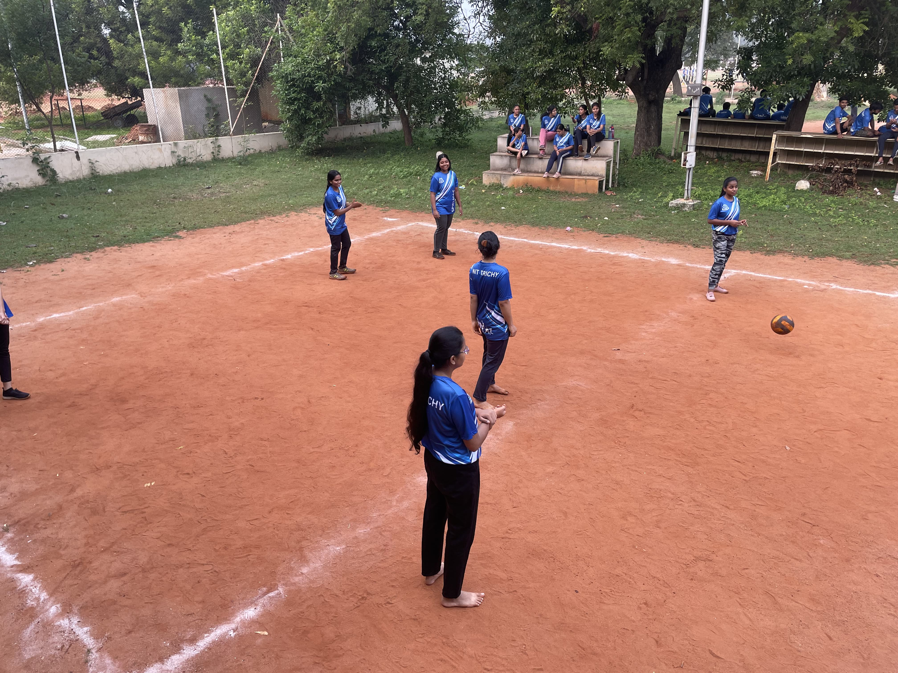
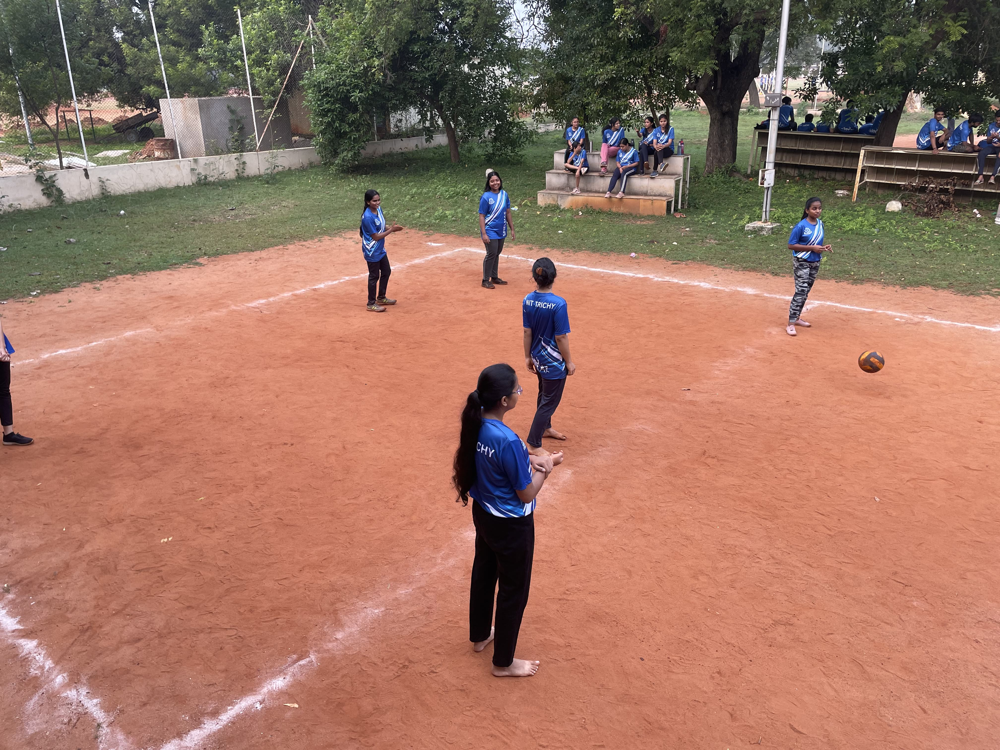

Spielmac
SPIELMAC is a sports event organised for Freshers. It is an experience in itself with 10 days straight of sports, games and fun for all 3 years. All possible sports were played by both boys and girls. The first years were very enthusiastic throughout the event. So the sports complex was flooded with the future software professionals ready to fight their senior counterparts, at least on the non-technical field. The sporting series encountered hard work and practice. Outdoor games like Volleyball, Football, Cricket, Basketball, and Athletics along with indoor games like Chess, Carrom, Table Tennis, and Badminton were played to their best by all the three years. There was also a plethora of fun games like seven stones and slow cycling race. First years showed their talent in skits and mimes also, which were enjoyed by everyone. The clatter of claps and cheer of classmates boosted the enthusiasm of all the players. All three years, including girls and boys, played to their best. There was immense talent and a tough competition but as they say only the best wins. Presence of esteemed alumni made the event more special. Overall it was a great experience in itself. Moreover it provided a nice environment for the students to interact among themselves on much higher plane than ever before

 



Agm
AGM(Annual General Meeting), it is a two day event organised by SOFTREC, in which our Alumni gather around and interaction between the Alumni and the current batches of MCA take place. Alumni talk are also organized in which alumni share their experience and guide students in their studies and upcoming future. Student from all three batches take part in this and prize winners of SPIELMAC are awarded. Apart from prize distribution, Workshops on recent technologies and industry trends is taken by our alumni to make students aware of the different domains that are available in the industry.


Softech
SOFTECH is a year-long event conducted by SOFTREC. In this event, SOFTREC members and all the senior students of MCA take weekly classes for the first year MCA Students. In the classes, the primary focus is to make the first year students aware of the latest technologies and trends, competitive programming and how to prepare for placements. In SOFTECH, Weekly Coding contests are also organized for the MCA students and top scorers are awarded the prizes in the AGM. Throughout the event, the main focus is to make students aware of the different domains that are available in the current industry and to ignite the curiosity in the students to learn more.